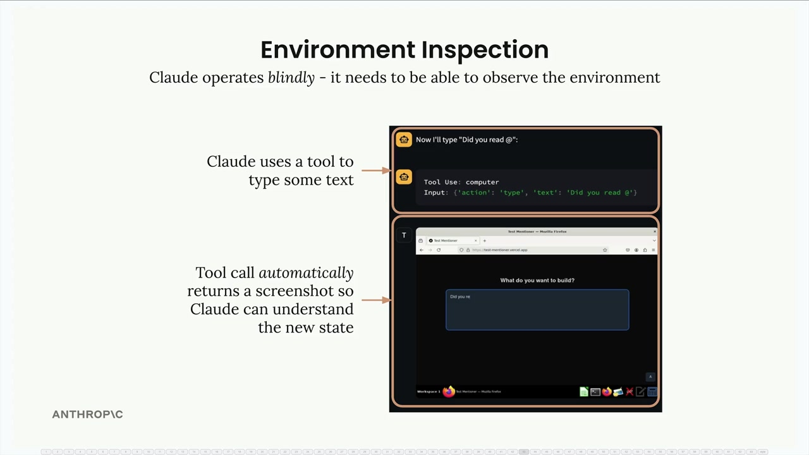
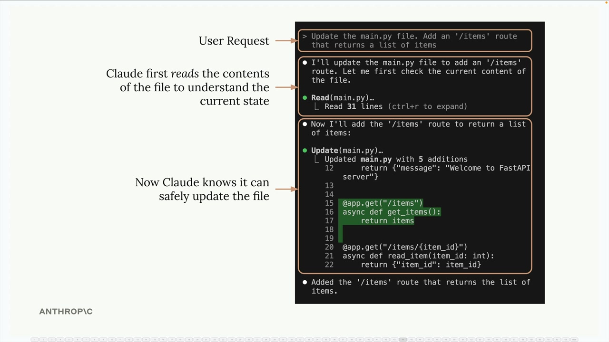
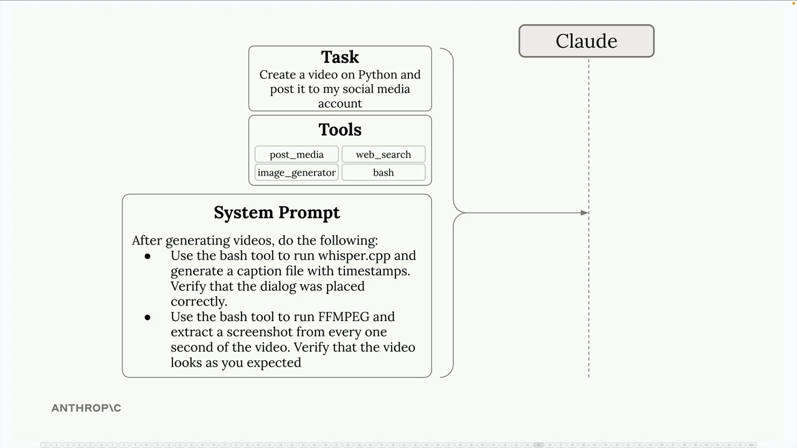

환경 검사
AI 에이전트를 구축할 때 종종 간과되는 중요한 개념이 있습니다. 바로 환경 검사입니다. Claude는 아무것도 보지 못하는 상태에서 작동하므로, 효과적으로 작동하려면 자신의 행동 결과를 관찰하고 이해할 수 있어야 합니다.
환경 검사가 중요한 이유
Claude가 컴퓨터 사용 작업을 처리하는 방식을 생각해 보세요. Claude가 텍스트 입력이나 버튼 클릭 같은 동작을 수행할 때마다 무슨 일이 일어났는지 파악하기 위해 즉시 스크린샷을 받습니다. 이것은 단순히 있으면 좋은 기능이 아니라 필수적인 요소입니다.

Claude의 관점에서 버튼 클릭은 새 페이지로 이동하거나, 메뉴를 열거나, 수많은 변화를 일으킬 수 있습니다. 결과를 볼 수 없다면 Claude는 자신의 행동이 성공했는지, 환경의 새로운 상태가 어떤지 전혀 파악할 수 없습니다.
쓰기 전에 읽기
이 원칙은 파일 작업에도 동일하게 적용됩니다. Claude가 파일을 수정하기 전에 현재 내용을 먼저 파악해야 합니다. 당연해 보일 수 있지만, 에이전트를 구축할 때 항상 따라야 할 패턴입니다.

위의 예시에서 Python 파일에 새 라우트를 추가하라는 요청을 받으면, Claude는 먼저 기존 코드를 읽어 현재 구조를 파악합니다. 그래야만 기존 기능을 손상시키지 않고 안전하게 요청된 변경을 수행할 수 있습니다.
환경 검사를 위한 시스템 프롬프트
시스템 프롬프트를 통해 Claude가 환경을 검사하도록 안내할 수 있습니다. 동영상 생성처럼 복잡한 작업에서는 이것이 특히 중요합니다.

다음과 같은 작업이 필요한 동영상 생성 에이전트를 생각해 보세요:
- FFmpeg 같은 도구를 사용하여 동영상 콘텐츠 생성
- 오디오 대화가 올바르게 배치되었는지 확인
- 시각적 요소가 예상대로 나타나는지 확인
다음과 같은 시스템 프롬프트 지시사항을 포함할 수 있습니다:
- bash 도구를 사용하여 whisper.cpp를 실행하고 타임스탬프가 포함된 자막 파일을 생성하여 대화 배치를 확인
- FFmpeg를 사용하여 일정 간격으로 동영상에서 스크린샷을 추출하여 출력물을 시각적으로 검사
- 생성된 콘텐츠를 원래 요구사항과 비교
환경 검사의 이점
Claude가 환경을 검사할 수 있으면 여러 가지가 개선됩니다:
- 더 나은 진행 상황 추적 - Claude가 작업 완료까지 얼마나 남았는지 가늠할 수 있습니다
- 오류 처리 - 예상치 못한 결과를 감지하고 수정할 수 있습니다
- 품질 보증 - 작업 완료로 간주하기 전에 출력물을 검증할 수 있습니다
- 적응적 행동 - Claude가 관찰한 내용을 바탕으로 접근 방식을 조정할 수 있습니다
실제 구현
자신만의 에이전트를 설계할 때, 항상 "Claude가 이 동작이 성공했는지 어떻게 알 수 있을까?"라고 자문해 보세요. 파일, API, 사용자 인터페이스 등 무엇을 다루든 Claude가 자신의 행동 결과를 관찰할 수 있도록 도구와 지시사항을 제공하세요.
이는 다음을 의미할 수 있습니다:
- 수정 전 파일 내용 읽기
- UI 상호작용 후 스크린샷 촬영
- 예상 데이터에 대한 API 응답 확인
- 생성된 콘텐츠를 요구사항과 대조하여 검증
환경 검사는 Claude를 단순히 명령을 맹목적으로 실행하는 수행자에서, 자신의 작업 환경을 진정으로 이해하고 적응할 수 있는 에이전트로 변환시킵니다.